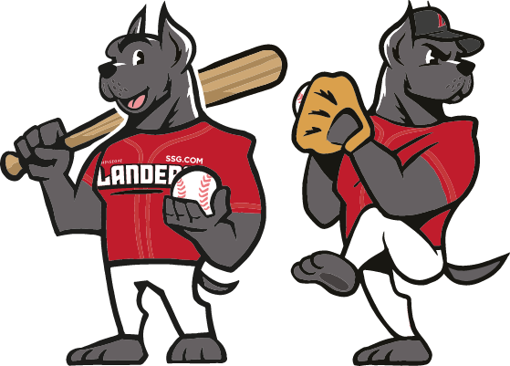

SSG 랜더스
NO LIMITS, AMAZING LANDERS
인천광역시를 연고로 한 한국 프로 야구(KBO)의 제9구단
야구장
홈구장
인천광역시 미추홀구 문학동
인천 SSG 랜더스필드
연혁
2000년 SK 와이번스 창단
2002년 홈구장 문학구장으로 변경
2003년 포스트시즌 진출
2003년 한국시리즈 준우승
2005년 포스트시즌 진출
2007년 정규리그 1위 및 포스트시즌 진출
2007년 한국시리즈 우승
2008년 정규리그 1위 및 포스트시즌 진출
2008년 한국시리즈 우승
2009년 포스트시즌 진출
2009년 한국시리즈 준우승
2010년 정규리그 1위 및 포스트시즌 진출
2010년 한국시리즈 우승
2011년 포스트시즌 진출
2011년 한국시리즈 준우승
2012년 포스트시즌 진출
2012년 한국시리즈 준우승
2015년 포스트시즌 진출
2017년 포스트시즌 진출
2018년 포스트시즌 진출
2018년 한국시리즈 우승
2019년 포스트시즌 진출
2021년 구단명 SSG 랜더스 변경
한국시리즈 우승
★★★★ 4회
2007년, 2008년, 2010년, 2018년
영구결번
26. 박경완
마스코트

랜디